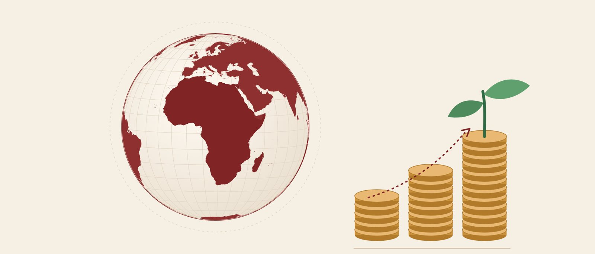

Ideas · Article 2 of 5
When Sustainability Makes Financial Sense
What one property taught me about making environmental improvements easier for decision-makers to support

One of my most useful lessons about sustainability started with a very different problem.
Money.
In 2025, while working with Knight Frank Nigeria, I took the initiative to investigate persistent losses at Benin City Mall. The property was losing approximately USD3,200 each month and energy expenditure was contributing to the pressure.
There was an obvious temptation to ask for more money.
I thought we should first understand where the existing money was going and that decision eventually changed the way I think about sustainability.
Start with the problem, not the label
Our review of the mall's electricity use identified unnecessary overnight cooling in areas with little or no activity. We also found older lighting fixtures using more electricity than necessary.
Together, cooling and lighting accounted for 62% of the energy waste identified in our assessment.
At that point, we knew where much of the problem was coming from but identifying waste and getting someone to pay to correct it are two very different things.
The state government still had to decide whether investing more capital made sense.
That required me to change the way I presented the solution.
Instead of relying on a technical explanation of inefficient cooling and lighting, I translated the recommendations into financial terms. The proposed investment had an estimated payback period of fourteen months, with projected savings of approximately USD13,714 over three years.
Now there was something concrete to discuss.
With stakeholder support, unnecessary overnight cooling was reduced and inefficient lighting replaced.
Within six months, energy consumption had fallen by 27%, while realised cumulative operating-cost savings reached approximately USD2,133.
For me, the important lesson wasn't simply that we saved energy. It was that an environmental improvement became easier to support when the commercial case was visible too.
The questions decision-makers actually ask
When sustainability is discussed among people who already care deeply about environmental issues, it is easy to forget what the conversation sounds like elsewhere.
A property owner might agree completely that reducing energy consumption is desirable and still ask:
How much will this cost?
How long before I recover the investment?
Will the work interrupt operations?
What happens to my operating expenses?
Will occupants notice an improvement?
How will we measure whether it worked?
Those are not unreasonable objections to sustainability. They are normal investment questions.
And if we want more environmental improvements to move from proposals into actual buildings, we need to get better at answering them.
That is why I increasingly believe that the financial case should sit alongside the environmental case, not behind it.
The International Finance Corporation's Nigeria EDGE Green Buildings Market Transformation Program takes a similar market-oriented approach. Its objectives include reducing energy and water consumption and the energy embodied in construction materials while lowering utility costs for homeowners and operating costs for businesses. disclosures.ifc.org, disclosures.ifc.org
Nigeria's green-building market is also beginning to produce more visible examples. Projects recognised through IFC EDGE have included office, retail and mixed-use properties, as well as retrofits of existing assets. guardian.ng
What interests me about this is not certification for its own sake. It is the possibility of making better building performance measurable because what gets measured becomes much easier to discuss.
Before recommending a solution, establish the baseline
The Benin City Mall experience also changed the questions I ask when looking at a property.
Before talking about solutions, I increasingly want to know:
How much energy does the building currently consume?
Where is that energy going?
How much water does it use?
What does poor performance cost?
Where is waste occurring?
What environmental or climate risks affect the property?
Which improvements are technically realistic?
How much will they cost?
And after implementation, what will tell us whether they worked?
Without a baseline, sustainability can easily become a collection of good intentions. With one, we have something to test.
From one building to a repeatable approach
This thinking is now informing a sustainability advisory model I am developing for the built environment.
The approach I'm exploring is deliberately straightforward:
Establish the baseline. Diagnose the problem. Prioritise the opportunities. Build the business case. Implement. Measure. Learn.
The aim isn't to recommend every sustainability intervention available.
A particular building may need to focus on energy first. Another may have a more serious water problem. Somewhere else, drainage, waste, resilience or occupant needs may be more pressing.
The point is to understand the asset before prescribing the solution and then to ask which interventions make sense environmentally, operationally and financially.
Making better decisions easier to approve
Not every environmental benefit can or should be reduced to a financial return.
Climate resilience is a good example. The value of avoiding future disruption may not fit neatly into a fourteen-month payback calculation. The same is true of many social and environmental outcomes.
But that should not stop us from quantifying value where we genuinely can.
If a more efficient building can reduce resource consumption, lower operating expenditure and improve performance, decision-makers should be able to see those relationships clearly.
My work at Benin City Mall started with a fairly ordinary question:
Where are we losing money?
It has since led me towards a much bigger one:
How can we make environmentally responsible decisions easier for property owners, investors and institutions to justify?
I don't have a complete answer yet.
That's part of what I'm trying to build.
What I know from experience is that good intentions alone rarely change buildings. Someone eventually has to approve the investment, implement the solution and measure what happened.
If sustainability is going to become a more normal part of how we develop and operate property in Nigeria, those conversations will have to work for more than environmental specialists.
They will have to make sense to the people signing the cheque too.